Home
Liturgy
Roman Missal
Order of Mass
124. After the chalice and paten have been set down, the Priest, with hands joined, says:
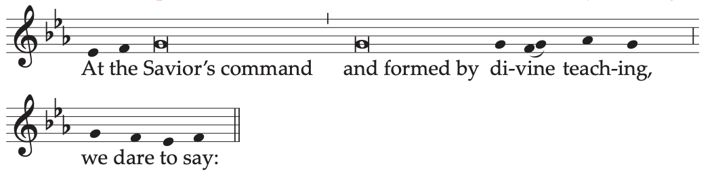
At the Savior’s command
and formed by divine teaching,
we dare to say:
He extends his hands and, together with the people, continues:
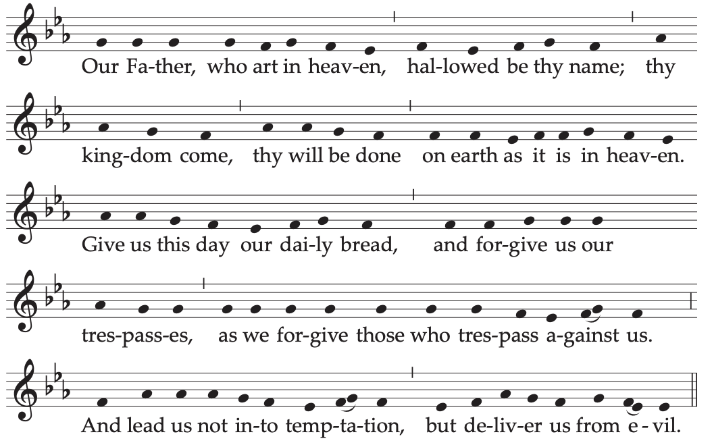
Our Father, who art in heaven,
hallowed be thy name;
thy kingdom come,
thy will be done
on earth as it is in heaven.
Give us this day our daily bread,
and forgive us our trespasses,
as we forgive those who trespass against us;
and lead us not into temptation,
but deliver us from evil.
Or:
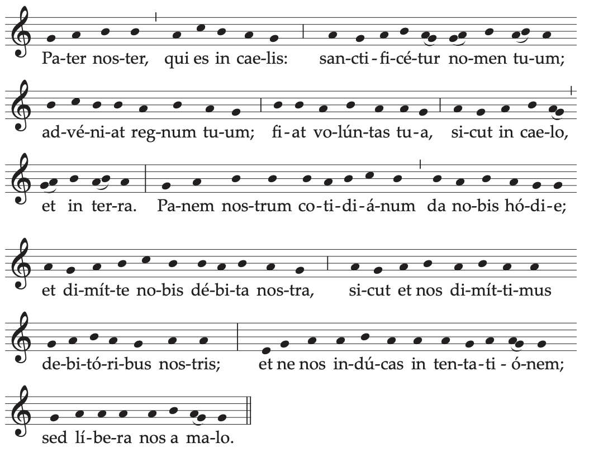
Alternate musical settings of the Lord’s Prayer may be found in Appendix I, pp. 1443-1444.
125. With hands extended, the Priest alone continues, saying:
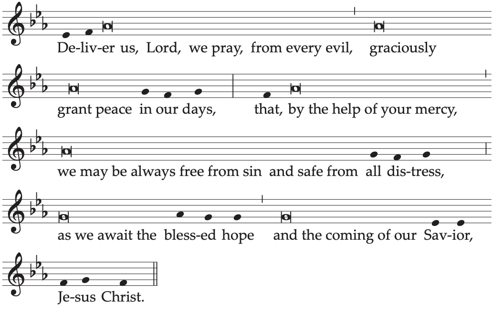
Deliver us, Lord, we pray, from every evil,
graciously grant peace in our days,
that, by the help of your mercy,
we may be always free from sin
and safe from all distress,
as we await the blessed hope
and the coming of our Savior, Jesus Christ.
He joins his hands.
The people conclude the prayer, acclaiming:
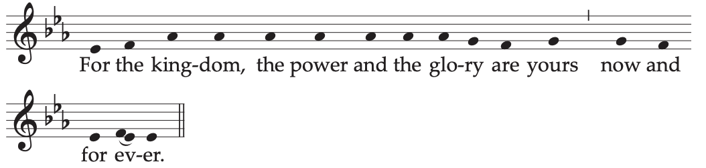
For the kingdom,
the power and the glory are yours
now and for ever.
126. Then the Priest, with hands extended, says aloud:
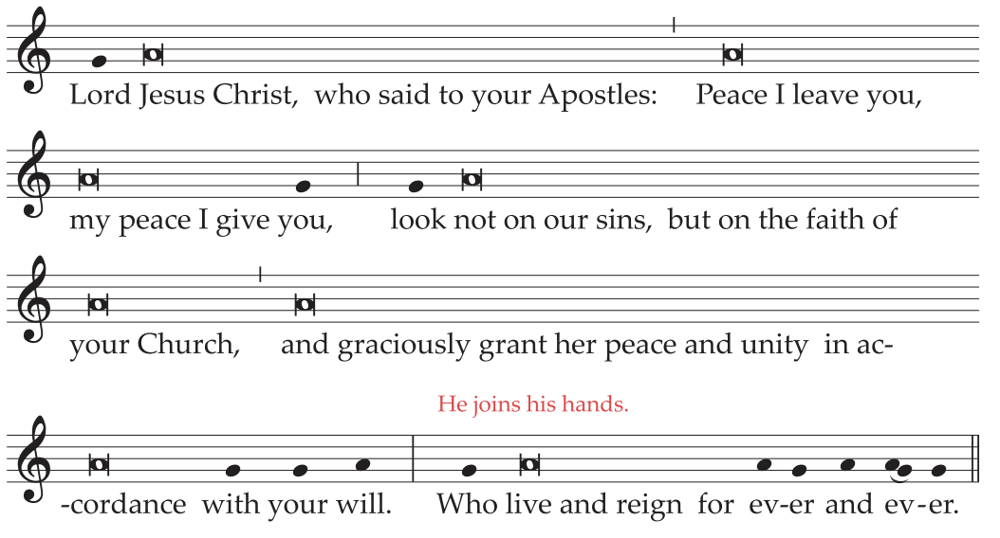
Lord Jesus Christ,
who said to your Apostles:
Peace I leave you, my peace I give you,
look not on our sins,
but on the faith of your Church,
and graciously grant her peace and unity
in accordance with your will.
He joins his hands.
Who live and reign for ever and ever.
The people reply:
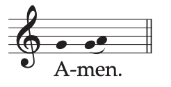
127. The Priest, turned towards the people, extending and then joining his hands, adds:
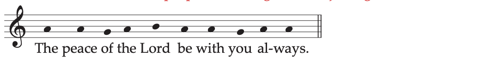
The peace of the Lord be with you always.
The people reply:

And with your spirit.
128. Then, if appropriate, the Deacon, or the Priest, adds:
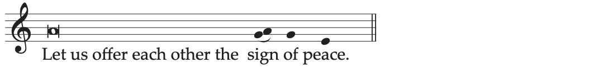
And all offer one another a sign, in keeping with local customs, that expresses peace, communion, and charity. The Priest gives the sign of peace to a Deacon or minister.
129. Then he takes the host, breaks it over the paten, and places a small piece in the chalice, saying quietly:
May this mingling of the Body and Blood
of our Lord Jesus Christ
bring eternal life to us who receive it.
130. Meanwhile the following is sung or said:
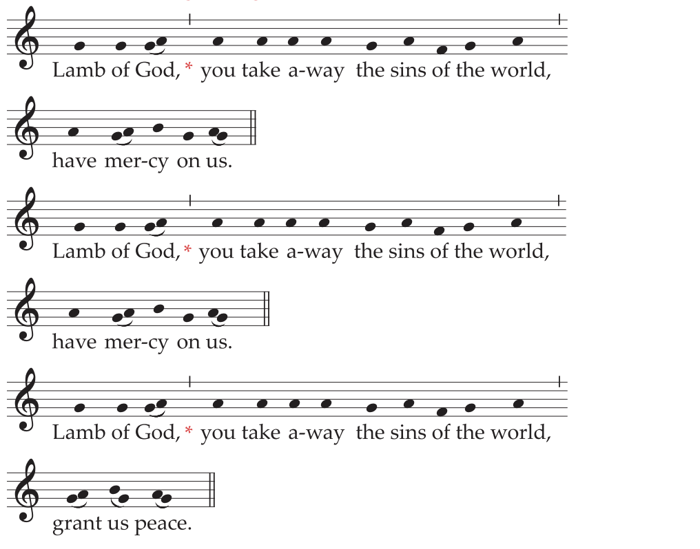
Lamb of God, you take away the sins of the world,
have mercy on us.
Lamb of God, you take away the sins of the world,
have mercy on us.
Lamb of God, you take away the sins of the world,
grant us peace.
Or:
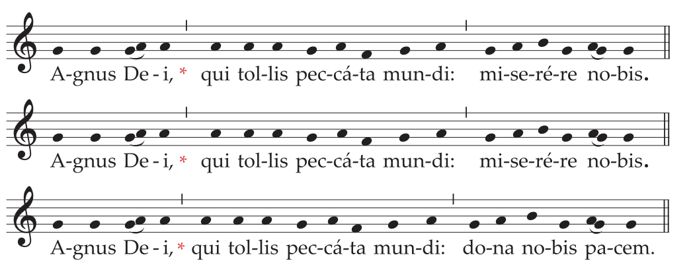
The invocation may even be repeated several times if the fraction is prolonged. Only the final time, however, is grant us peace said.
131. Then the Priest, with hands joined, says quietly:
Lord Jesus Christ, Son of the living God,
who, by the will of the Father
and the work of the Holy Spirit,
through your Death gave life to the world,
free me by this, your most holy Body and Blood,
from all my sins and from every evil;
keep me always faithful to your commandments,
and never let me be parted from you.
Or:
May the receiving of your Body and Blood,
Lord Jesus Christ,
not bring me to judgment and condemnation,
but through your loving mercy
be for me protection in mind and body
and a healing remedy.
132. The Priest genuflects, takes the host and, holding it slightly raised above the paten or above the chalice, while facing the people, says aloud:
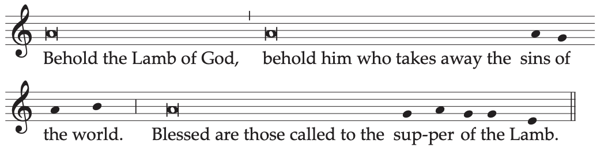
Behold the Lamb of God,
behold him who takes away the sins of the world.
Blessed are those called to the supper of the Lamb.
And together with the people he adds once:
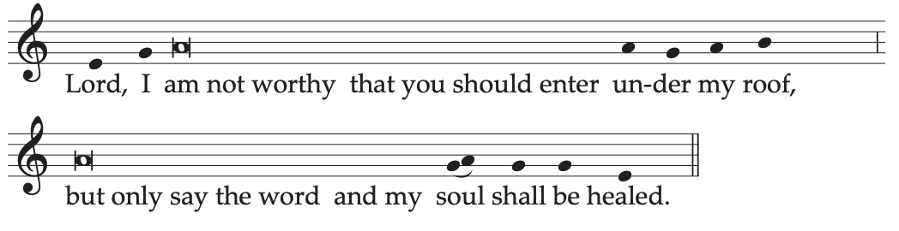
Lord, I am not worthy
that you should enter under my roof,
but only say the word
and my soul shall be healed.
133. The Priest, facing the altar, says quietly:
May the Body of Christ
keep me safe for eternal life.
And he reverently consumes the Body of Christ.
Then he takes the chalice and says quietly:
May the Blood of Christ
keep me safe for eternal life.
And he reverently consumes the Blood of Christ.
134. After this, he takes the paten or ciborium and approaches the communicants. The Priest raises a host slightly and shows it to each of the communicants, saying:
The Body of Christ.
The communicant replies:
Amen.
And receives Holy Communion.
If a Deacon also distributes Holy Communion, he does so in the same manner.
135. If any are present who are to receive Holy Communion under both kinds, the rite described in the proper place is to be followed.
136. While the Priest is receiving the Body of Christ, the Communion Chant begins.
137. When the distribution of Communion is over, the Priest or a Deacon or an acolyte purifies the paten over the chalice and also the chalice itself.
While he carries out the purification, the Priest says quietly:
What has passed our lips as food, O Lord,
may we possess in purity of heart,
that what has been given to us in time
may be our healing for eternity.
138. Then the Priest may return to the chair. If appropriate, a sacred silence may be observed for a while, or a psalm or other canticle of praise or a hymn may be sung.
139. Then, standing at the altar or at the chair and facing the people, with hands joined, the Priest says:
Let us pray.
All pray in silence with the Priest for a while, unless silence has just been observed. Then the Priest, with hands extended, says the Prayer after Communion, at the end of which the people acclaim:
Amen.